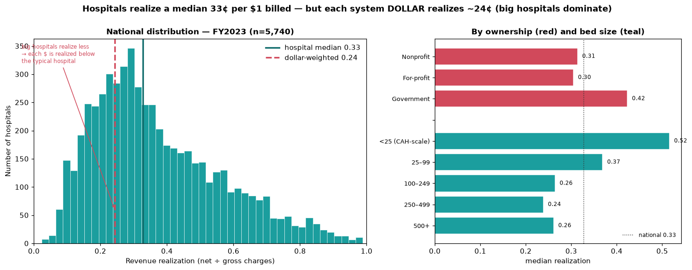
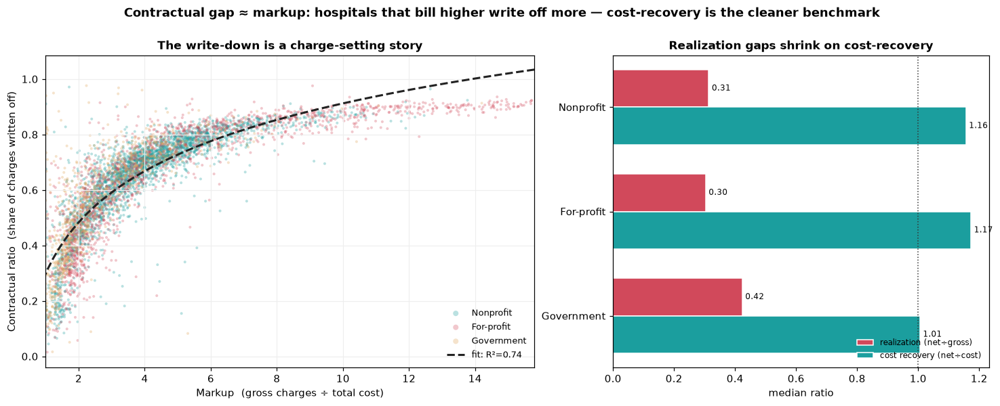
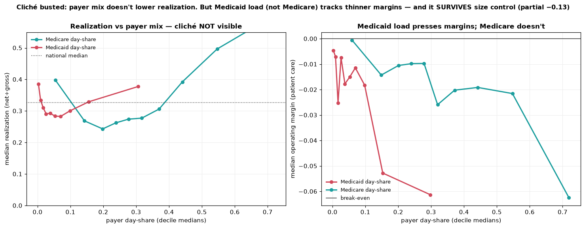
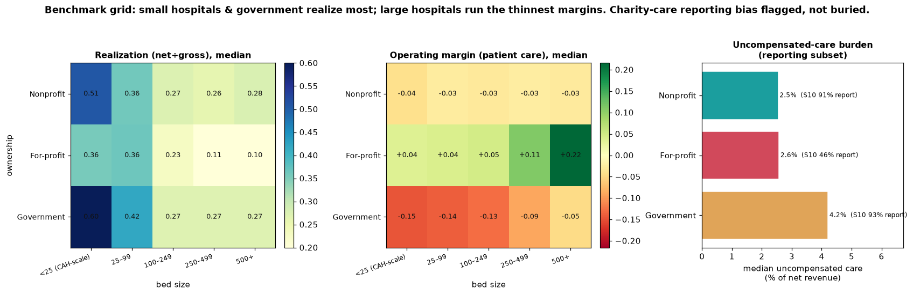
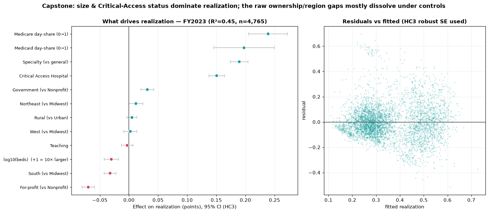

Of every dollar a U.S. hospital bills, how much actually lands as net revenue, and what explains the gap? A 5,657-hospital cross-section of CMS cost-report data, segmented the way a hospital CFO would slice it.
U.S. hospitals bill gross charges off a chargemaster that no payer pays in full. Commercial insurers, Medicare, and Medicaid each settle for a contracted fraction; the difference is written off as a contractual allowance. What hospital CFOs actually care about is the residue: net patient revenue. The ratio of net to gross — revenue realization — is the headline number for the revenue cycle, but it varies by an order of magnitude across hospitals. The question is which structural features of a hospital drive that variation, and which folk explanations (“Medicaid pays badly”, “for-profits collect more”) survive controls.
Operational revenue-cycle metrics — denial rates, days in AR, clean-claim rate, charge-capture accuracy — are proprietary and do not live in public data. They are not in this dataset, and nothing here pretends otherwise. What the CMS cost report does capture, and what this project rigorously analyzes, is the financial result of the revenue cycle: how much of billed charges hospitals realize as net revenue, the contractual gap between charges and net, payer-mix exposure, uncompensated-care burden, and operating margin. Calling this out up front is the point — analytics work for a consulting client is judged on knowing exactly what the data does and does not cover.
Three CMS Hospital Provider Cost Report files (FY2021–FY2023, ~6,000 hospitals each, 117 identical columns) joined into an 18,220-row panel. Phase 1: explore, map missingness, clean, engineer ratio metrics. Phase 2: five gated analyses — national realization, the contractual gap, payer-mix vs realization, segmentation deep-dive, and a regression capstone that disentangles the confounded raw segment gaps.
FY2023 hospital-weighted median realization is 0.327 — the typical hospital nets ~33¢ of each $1 billed, with the other 67¢ written off as contractual allowance. But the dollar-weighted aggregate — the system view a payer would see — falls to 0.243. That ~8¢ gap is not noise. Large hospitals realize less and dominate total dollars, so the system as a whole runs below the typical hospital. The aggregate scale: $5.7T billed → $1.4T net → $4.3T contractual write-down. The two-weighting tension is the headline cut: a CFO benchmarking a single hospital uses the median; a payer modeling network spend uses the dollar weight.

The contractual ratio (1 − realization) is mechanically the same view from the other side, so its real value is what the mirror reveals: Spearman(markup, contractual ratio) = +0.905, and log10(markup) alone explains R²=0.74 of contractual-ratio variance. Translation — the gap between gross charges and net revenue is overwhelmingly driven by how aggressively a hospital sets its chargemaster, not by how hard its payers squeeze. Net-to-cost — net revenue divided by total cost — is far tighter (CV 0.25 vs realization’s 0.52, median ~1.14): once charge-setting noise is stripped out, most hospitals recover roughly cost on patient services. The CFO-grade benchmark for collections discipline is net-to-cost, not realization.

A standard cliche says more public-payer load — more Medicaid, more Medicare — pulls realization down because public rates are lean. The data flatly contradicts the headline version: Medicare day-share against realization is +0.33 raw, public-pay share +0.38. Higher public-payer share goes with higher realization, because high-public hospitals skew small, rural, and Critical Access (which are cost-reimbursed at modest markups). Once size is partialled out the effect shrinks (+0.10 / +0.18) but stays positive — not negative. The real Medicaid pressure shows up in operating margin, not realization: raw Medicaid–margin correlation −0.09, and critically, partialling out size strengthens it to −0.127. Medicaid (not Medicare, not public pay broadly) carries a size-robust negative margin signal consistent with Medicaid paying furthest below cost.

Two-way ownership × bed-size grids surface the cleanest client takeaway in the project: the two ratios point opposite ways. For-profit is the only ownership class with positive patient-care margins, and the margin rises with size: +4% (small) → +11% (250–499 beds) → +22% (500+). Nonprofit hovers near −3% across the board (break-even by mission). Government is deeply negative everywhere, worst at the small CAH end (−15%) and still −5% at 500+ beds. So Government “realizes most per charge” (0.60 in the top cell) but loses the most on patient care; For-profit “realizes least” (0.10 in the bottom cell) but earns the most. The implication for a consulting deliverable: benchmark on margin, not realization.

OLS with HC3-robust standard errors, FY2023 n=4,765, R² = 0.447, VIF<2.7 throughout. Predictors: size, ownership, teaching, rural, region, provider type (CAH / specialty / general), and payer mix — deliberately excluding markup and cost-to-charge because Step 5 flagged them as mechanical co-derivatives of realization. Critical Access Hospitals +0.151 and Specialty (psych / rehab) +0.190 dominate. Size’s raw effect (−0.092 without CAH in the model) collapses to −0.030 per 10× once CAH is controlled — the size effect was partly CAH all along. Government’s raw ~11-point realization edge (Steps 3 / 8) shrinks to +3 points net of size and CAH; teaching (~0) and rural (+0.005) dissolve entirely. For-profit lands at −0.070 (the markup signature). The Medicare day-share coefficient is +0.239 and Medicaid +0.198 — net of everything, more public-payer load goes with higher realization, decisively busting the folk story.
A parallel operating-margin model confirms the ownership flip rigorously: net of controls, For-profit +0.198 and Government −0.323 versus Nonprofit. For-profits realize least but earn most; Government realize most but lose most. The real ownership story lives in margin, not realization.

| Finding | Implication for a consulting deliverable |
|---|---|
| Median realization 0.327 vs dollar-weighted 0.243 | Benchmark single hospitals on the hospital median; benchmark networks and payer spend on the dollar weight — they answer different questions. |
| Contractual gap is 74% explained by markup | Net-to-cost (median ~1.14, CV 0.25) is a cleaner CFO benchmark than realization for collections discipline. |
| Public-payer share → higher realization (net of size) | The “Medicaid pays badly” story belongs on operating margin, not realization. Don’t misdiagnose payer-mix exposure on the wrong metric. |
| For-profit: realization 0.10, margin +22% at 500+ beds | Realization measures discount depth, not profitability. Aggressive chargemasters at scale couple low realization with the highest patient-care margins in the system. |
| Government’s raw realization edge shrinks 11pt → 3pt | Half the “Government realizes more” story is bed-size and CAH composition. Apples-to-apples segment comparisons need ownership × size grids, not raw ownership medians. |
All scripts are plain .py files run in numbered order, not notebooks — every step is reproducible end-to-end from the CMS source CSVs. Phase 1 (Steps 1–7): load and inventory by data-dictionary code, distribution of the headline metric, raw segment breakdowns ranked by Kruskal–Wallis effect size, missingness audit with chi-square tests on every segment dimension (the “informative missingness” check that protects the Phase-2 ownership comparisons), tag-don’t-drop cleaning with a validity flag (gross ≥ $100k, realization ∈ (0, 0.99]), correlation / redundancy analysis (which surfaced contractual-ratio, cost-to-charge, and markup as mechanical co-derivatives of realization and disqualified them as predictors), and 15 justified engineered features. Phase 2 (Steps 8–12): the five analyses above, each gated, each with a written “what to look for” note saved alongside its figure. Phase 3 (Steps 13–16): pre-aggregated JSON exported to the dashboard, then a single self-contained Plotly file (~349 KB) with live cross-filtering and a regression toggle, then this case-study wrapper.
CMS Hospital Provider Cost Report PUF, 18,220-row 3-year panel. Pandas-driven cleaning and feature engineering, statsmodels OLS with HC3 robust standard errors for the capstone, a single self-contained Plotly.js dashboard with the per-hospital record array inlined for live re-aggregation under user filters.
Interested in revenue-cycle analytics, hospital financial benchmarking, or healthcare consulting work?
Get in touch